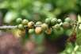
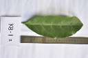
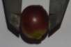
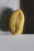
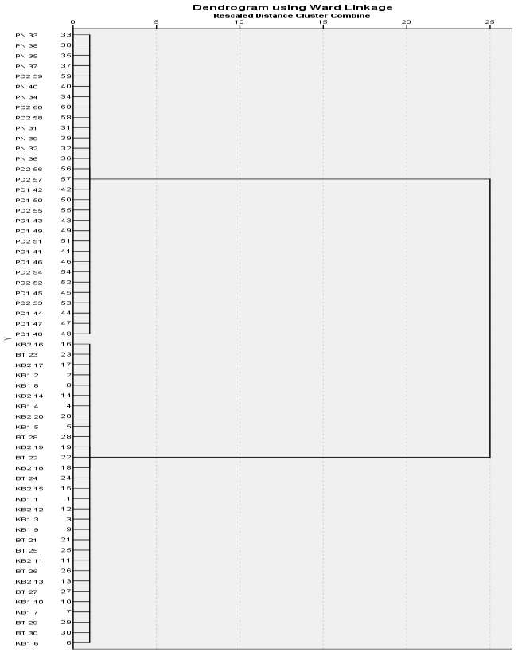

FLORA GAMBUT · DATASET PENELITIAN 2026
Kopi Liberika Coffea liberica
Karakterisasi morfologi 60 individu pada enam populasi di lahan gambut Pulau Bengkalis.
Dataset Penelitian · Karakterisasi Morfologi · 2026

PROFIL SPESIES
Liberika pada gambut Bengkalis
Kopi Liberika dikenal mampu beradaptasi pada lahan gambut basah dan tanah masam. Penelitian ini mendokumentasikan variasi batang, daun, buah, dan biji sebagai dasar pelestarian plasma nutfah serta seleksi calon varietas lokal.
- Nama ilmiah
- Coffea liberica
- Famili
- Rubiaceae
- Metode
- Survei dengan sampel purposif
- Acuan karakter
- Deskriptor UPOV (2008)
- Waktu
- Februari–Maret 2026
- Wilayah
- Kecamatan Bantan dan Bengkalis
SEBARAN PENELITIAN
Enam lokasi/populasi
Titik menunjukkan lokasi populasi, bukan koordinat presisi setiap pohon.
MORFOLOGI
Ringkasan 60 individu penelitian
Statistik dihitung dari seluruh data individu penelitian.



Dokumentasi visual bersumber dari laporan penelitian Azrul 2026.
Catatan dataBerdasarkan 60 data individu, daun berwarna hijau pekat tercatat pada 53 individu (88,33%). Nilai ini berbeda dari ringkasan laporan yang mencantumkan 98,33%.
PERBANDINGAN POPULASI
Karakter morfologi pada enam populasi
Setiap nilai merupakan rata-rata dari 10 individu pada masing-masing populasi.
Perbandingan nilai rata-rataPilih karakter untuk melihat variasi antarpopulasi.
| Populasi | Tinggi tanaman | Panjang daun | Diameter buah | Bobot 100 buah | Berat 100 biji |
|---|
Data individual tersedia untuk penelaahan dan penggunaan ilmiah dengan mencantumkan sumber penelitian.
DATA INDIVIDUAL
Daftar 60 individu penelitian
60 individu
VARIABILITAS FENOTIPIK
Peluang seleksi sifat kuantitatif
Analisis laporan menggolongkan tinggi tanaman, panjang daun, bobot segar 100 buah, dan berat 100 biji kering sebagai karakter dengan variabilitas luas. Karakter kualitatif cenderung lebih homogen.
Tinggi tanamanPanjang daunBobot segar buahBerat biji kering
Makna hasil
Karakter dengan variasi luas dapat menjadi bahan awal untuk memilih individu yang memiliki sifat berbeda. Penilaian lanjutan tetap diperlukan sebelum menetapkan calon varietas atau bahan pemuliaan.
ANALISIS KEMIRIPAN
Pengelompokan morfologi

Didominasi populasi PN dan mencakup sebagian individu PK2 menurut interpretasi laporan.
Mencakup populasi KB1, KB2, BT, PK1, serta individu PK2 lainnya.
Pengelompokan didasarkan pada kemiripan karakter morfologi. Hasil ini tidak menunjukkan hubungan genetik dan bukan penetapan varietas final.
SUMBER PENELITIAN
Azrul, M. Amrul Khoiri & Joni Irawan
Fakultas Pertanian Universitas Riau, 2026. Karakterisasi Morfologi Tanaman Kopi Liberika (Coffea liberica) Lokal pada Beberapa Lahan Gambut di Pulau Bengkalis.
Dataset Penelitian
2026
2026